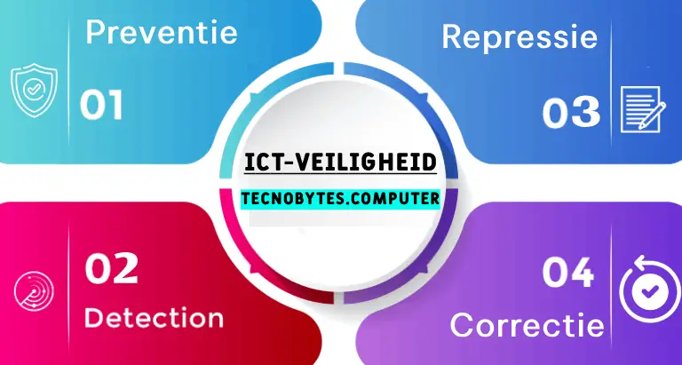
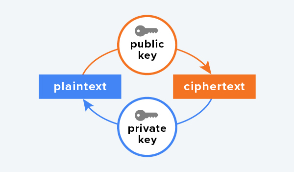

Inleiding
Er zijn veel maatregelen om de veiligheid van ICT-systemen goed te maken. Daarvoor zijn maatregelen die je in 4 catogorieën:
- Preventie
- Detectie
- Repressie
- Correctie.
Encriptie speelt een centrale rol in de beveiliging van gegevens. Hieronder leest u meer over de eerdere aangestipte punten.

Preventie
Preventie is de maatregel om het probleem te verkomen. De soft- en hardware moet veilig zijn gemaakt en de software moet up-to-date blijven.
De juiste gebruikers hebben nog wel toegang nodig daarom is een goede authenticatie essentieel. Ook moet u erop letten dat u enkel de noodzakkelijke manieren van toegang toelaat.
Ook encriptie is een belangrijke maatregel bij preventie. Via encriptie blijft alles wat word opgeslagen of verzonen versleutelt.
Backups is een belangrijke preventie stap tegen het verlies of verandering van de data.
Detectie
Detectie is de controle op misbruik. Een voorbeeld daarvan is veel inlog pogingen doen in een account.
Een belangrijk hulpmiddel daarbij is firewall. Firewall scant binnenkomende nerwerkverkeer op kwaadaardige dingen. Het beschermt tegen hackers malware en spam.
Ook anti-malwaresoftware is ook belangrijk. anti-malwaresoftware scant het apperaat op malware en verwijdert het.
Repressie en correctie
Als er een aanval is of malware is gevonden moeten maatregelen worden genomen (repressie>) en schade moet worden herstelt (correctie).
Als er mareware is aangetroffen kan het voldoende zijn om het te laten verwijderen door anti-malwaresoftware. Als de server niet meer beschikbaar is door de aanval kunt u overgaan naar een backup.
Bij serieuzere problemen zullen er systemen uitvallen of moeten worden uitgezet.
Symmetrische encryptie
Encryptie is gebaseert op een algoritme. dat algoritme is de sleutel van hoe je de encryptie kan kraken. Encryptie die gebruikmaakt van maar 1 sleutel heet symmetrische encryptie. De sleutel word gebruikt voor het versleutelen en het ontsleutelen van de data.
Asymmetrische encryptie
Asymmetrische encryptie word gebruikt als de ontvanger ook de sleutel nodig heeft. Er zijn dan 2 sleutels publieke sleuten en de geheime sleutle.
Met de publieke word het verstuurt en met de geheime word het weer onthult bij de ontvanger.
